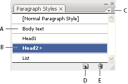

About character and paragraph styles
A character style is a collection of character-formatting attributes that you can apply to a selected range of text. A paragraph style includes both character- and paragraph-formatting attributes, and can be applied to a selected paragraph or range of paragraphs. Using character and paragraph styles saves time and ensures consistent formatting.
You use the Character Styles and Paragraph Styles panels to create, apply, and manage character and paragraph styles. To apply a style, simply select text and click a style name in one of the panels. If you don’t select any text, the style applies to new text you create.

- A.
- Style name
- B.
- Style with additional formatting (overrides)
- C.
- Panel menu
- D.
- New Style button
- E.
- Delete icon
When you select text or insert the cursor in text, the active styles are highlighted in the Character Styles and Paragraph Styles panels. By default, every character in a document is assigned the Normal Character Style and every paragraph is assigned the Normal Paragraph Style. These default styles are the building blocks for all other styles you create.
A plus sign next to a style name indicates that there are overrides to the style. An override is any formatting that doesn’t match the attributes defined by the style. Any time you change settings in the Character and OpenType panel, you create an override to the current character style; likewise, when you change settings in the Paragraph panel, you create an override to the current paragraph style.
For a video about using character and paragraph styles in Illustrator, see www.adobe.com/go/vid0047.